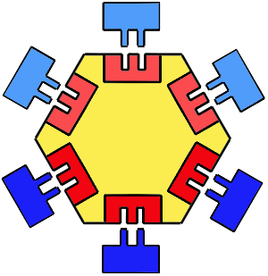
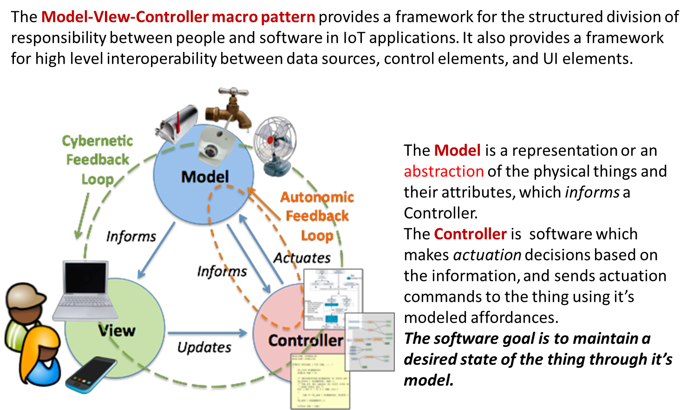

LabRobotRadar_2020 | A robot-radar system
The goal of this work is to build a distributed version of the system described in LabRadarGui | Radar GUI as a service in which sonar data are produced by a HC-SR04 device mounted on a RaspberryPi.The interaction between the robot-sonar and the radarGuiservice will be based on a CoAP Resource, according to the architecture shown in the following figure:
 |
|
- Activate the CoAP-observable resource Resource.java
- Activate a radar ResourceObserverRadar.java
- Activate a producer of sonar data
Producers of sonar data
sonarSimulateWithActor.kt or sonarSimulator.kt : provide a simulator of sonar data that might be useful during software development in absence of a RaspberryPi.- generates a sonar value V by reading an input value from the user-console;
- creates an event EV as an instance of ApplMessage. For example:
msg(sonar,event,sonaronpcsimulated,none,sonar(2,57),2)
- updates the CoAP resource ResourceSonar.java using the operation updateTheResource(String msg) defined in CoapSupport.java
- the executable version of the component
SonarAlone.c - the description file
coapConfig.txt that includes the elements of the resource-URL.
For example:
coap://192.168.1.8:5683 robot/sonar
Deployment notes
Remember that the Californium framework makes use of the logger library slf4j that should be included in the dependencies:compile group: 'org.slf4j', name: 'slf4j-log4j12', version: '1.7.25'This library
- Requires the presence in the directory
src of the file log4j.properties - generates (at run-time) the file
log4jInfo.log
The Resource Model in the center

|
 From the Guinard/Trifa WOT book, we read (pg. 225) : We need a method to describe what a device is and does. In other words, we need a |
Hexagonal architecture
The main aim of this architecture is to decouple the application's core logic from the services it uses. This allows different services to be "plugged in", and it allows the application to be run without these services.The connection between the inside and the outside part of the system is realized via abstractions called
|  |
|
The pattern MVC
|  |
Today, it is quite common to express the resource model in JSON.
{
"env": {
"actuators": {
"leds": {
"led1": {
"name": "LED 1",
"value": false,
"gpio": 4
},
"led2": {
...
}
}
}
...
}
|
Introspection: The system must be able to show relevant information to the user about the state
of the system and of the external world. For example, the system should show the current state of robot, including its
position (assuming that it moves into a room with a flat floor) and the value of temperature in the room.